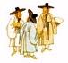

Programming Languages, Compiler, Software Engineering, Computer Science
- A :
Martin Abadi,
Samson Abramsky
(ftp),
Peter Aczel,
Alex Aiken,
Amal Ahmed,
Torben Amtoft,
Andrew W. Appel,
Zena M. Ariola,
Andrea Asperti,
Lennart Augustsson
- B :
Henry G. Baker,
H. P. Barendregt,
Nick Benton,
Gerard Berry,
Yves Bertot,
R.S.Bird,
Bruno Blanchet,
Dennis M. Volpano,
Gilad Bracha,
Frederic P. Brooks, Jr,
Kim B. Bruce,
Rod Burstall,
Alan Bundy,
Samuel R. Buss
- C :
Luca Cardelli,
Steven Carr,
Manuel M. T. Chakravarty,
Koen Claessen,
Robert Constable,
Mario Coppo,
Thierry Coquand,
Patrick Cousot,
Karl Crary,
Pierre-Louis Curien
- D :
Olivier Danvy,
Tony Davy,
Edsgar Wybe Dijkstra,
Allyn Dimock,
Sophia Drossopoulou,
Peter Dybjer
- E :
Conal Elliott,
Dawson Engler,
Martin Erwig
- F :
Matt Fairtlough,
Leonidas Fegaras ,
Matthias Felleisen,
Amy Felty,
Andrzej Filinski,
Charles N. Fischer,
Cormac Flanagan,
Maarten Fokkinga,
Jeff S. Foster,
Pascal Fradet
- G :
Jean H. Gallier,
Lal George,
Jeremy Gobbons,
Benjamin Goldberg,
Andy Gill ,
Jean-Yves Girard,
Paul Graham,
William G. Griswold,
Andrew D. Gordon,
Carl A. Gunter,
Joshua Guttman
- H :
Dan Hao,
John Hannan,
David R. Hanson,
Michael Hanus,
Robert Harper,
Peter O'Hearn
Nevin Heintze
F. Henglein,
Michael Hind,
Ralf Hinze,
Tom Hirschowitz,
Tony Hoare,
Gerard J. Holzmann
Susan B. Horwitz,
Paul Hudak,
Zhenjiang Hu,
G. Huet,
R.J.M. Hughes
- I :
Atsushi Igarashi,
- J :
Suresh Jagannathan,
Stephen A. Jarvis,
Thomas P. Jensen,
(old ftp),
Trevor Jim,
Mark P. Jones,
Neil D. Jones,
Richard Jones,
Pierre Jouvelot,
Achim Jung,
- K :
Gilles KAHN,
Stefan Kahrs,
Sam Kamin,
Ken Kennedy,
Brian W. Kernighan,
Naoki Kobayashi,
A. J. Kfoury,
Jeffrey Korn,
Dexter Kozen,
J. L. Krivine
- L :
James Larus,
Konstantin Laufer,
John Launchbury,
Dongyoon Lee,
Peter Lee,
Mark Leone,
Xavier Leroy,
Allen Leung,
Rainer Leupers,
Mark Lillibridge
- M :
David B. MacQueen,
John Maraist,
Ursula Martin,
Conor McBride,
John McHugh,
Erik Meijer,
Jose Meseguer,
Dale Milner,
Robin Milner
Yasuhiko Minamide,
Shin-ichi Minato
John C. Mitchell,
Eugenio Moggi,
R.G.Morgan,
Oege de Moor,
Greg Morrisett,
Joe Wells,
Ron Morrison,
Robert Muller,
Alan Mycroft
- N :
Lee Naish,
George Necula,
Gopalan Nadathur,
Flemming Nielson,
Henrik Nillsson,
Tobias Nipkow
- O :
Martin Odersky,
Peter O'Hearn,
Atsushi Ohori,
Chris Okasaki,
C-H L Ong
- P :
Valeria de Paiva,
Jens Palsberg,
Bruno Pagano,
Ross Paterson,
Larry Paulson,
Francois Pessaux,
Simon Peyton Jones,
Frank Pfenning,
Benjamin C. Pierce,
Andrew Pitts,
Gordon D. Plotkin,
Jeff Polakow,
Francois Pottier,
Todd A. Proebsting,
William Pugh,
David J. Pym
- R :
C.R.Ramakrishnan,
Norman Ramsey,
Uday Reddy,
D. Remy,
John Reppy,
John C. Reynolds
(ftp),
Eike Ritter
K.H.Rose
- S :
Jiasi Shen,
Amr Sabry,
Davide Sangiorgi ,
Masataka Sassa,
David A.Schmidt,
Helmut Schwichtenberg,
Michael I. Schwartzbach,
Dana Scott,
Helmet Seidl,
Morten Heine B. S�rensen,
R.Sekar,
Jonathan P. Seldin,
Silvija Seres,
Peter Sestoft,
Zhong Shao,
Tim Sheard,
Thomas Streicher,
Gert Smolka,
Bernard Sufrin,
Martin Sulzmann,
Don Syme,
- T :
Jean Pierre Talpin,
David Tarditi,
Hayo Thielecke,
Peter Thiemann
Mads Tofte,
Andrew Tolmach,
Guy Tremblay ,
David N. Turner
Jeffrey D. Ullman
- V :
Andrei Voronkov
- W :
Philip Wadler,
David Walker,
Edward Walker,
Malcolm Wallace,
Mitchell Wand,
Meng Wang,
David Watt,
Joe Wells,
Stephanie Weirich,
Paul R. Wilson,
Andrew K. Wright
- X :
Hongwei Xi
- Y :
Nobuko Yoshida
- Z :
Guo-Qiang Zhang,
- Other links :